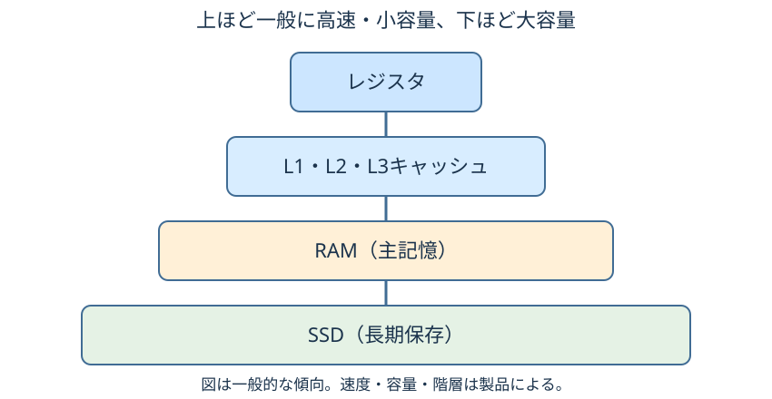
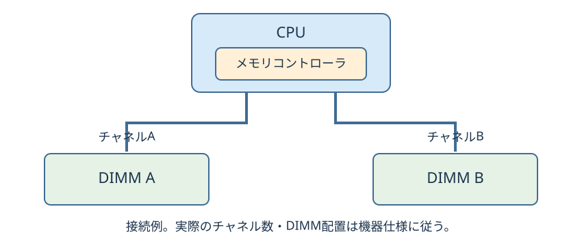
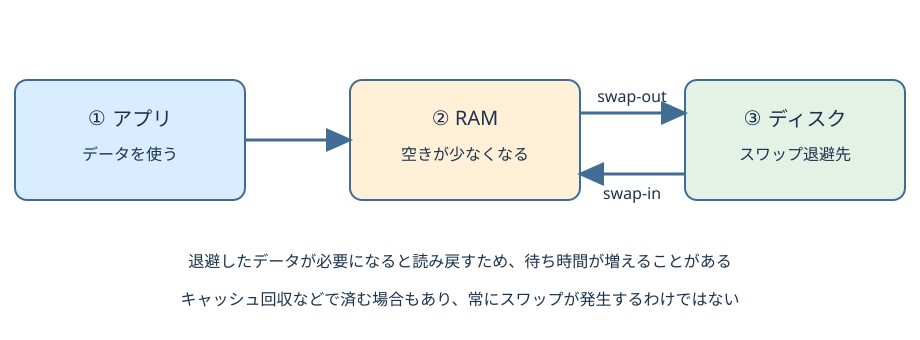

第11講 メモリの構造・RAM・ECC・メモリ階層
到達目標
①CPUが使うデータをRAMがどう支えるか説明できる。②メモリ容量と速度、キャッシュとスワップの違いを説明できる。③ECCメモリの訂正可能な誤りと訂正できない誤りを区別できる。④監視値を見て、メモリ不足・アプリの使い過ぎ・DB待ちを切り分けられる。
資料・前提・重要度
2026年11月22日、GitHubの最新運用マスターv1.2、カリキュラム18編224講、進捗10講修了を確認。CPU・OS・メモリメーカーの公式仕様の特定製品・版・節は今回未照合。以下のログ、容量、時刻、設定は学習用の架空例であり、実環境の保証値ではない。重要度A：RAM・メモリ階層・メモリ不足・ECCの基本。B：Linuxとコンテナの監視・障害対応。C：容量・ECC・性能設計の判断。
1. なぜメモリを学ぶのか
注文画面を開くと、アプリは商品名や価格を使って計算し、DBから受け取った情報を加工する。CPU（中央処理装置）は計算担当だが、計算に使う情報を置く場所が必要だ。その主な置き場所がRAM（Random Access Memory、主記憶）である。RAMは、実行中のプログラムやデータを一時的に保持する部品で、一般に電源を切ると内容が失われる。
SSD（データを長期間保存する装置）は電源を切っても情報が残るが、通常、CPUが計算中のデータを扱うにはRAMより時間がかかる。RAMが不足すると、必要な情報をSSDなどから何度も読み戻すことがあり、アプリの応答が悪くなる。
ただし「メモリ使用率が高い＝障害」とは限らない。OS（コンピュータ全体を管理する基本ソフト）は、空いたRAMを読み込み済みファイルの一時保存にも利用するからである。
2. RAMは何を保存するか
RAMには、プログラムの命令、計算途中のデータ、DBから受け取った情報、OSが管理する情報などが置かれる。バイトは情報量の単位で、1GiB（ギビバイト）は1,024MiB、1MiBは1,024KiBである。製品の「GB」は10億バイト単位の場合もあり、監視画面のGiBと単純に一致しないことがある。
メモリセルは、情報の0と1を記録する小さな場所である。サーバの主記憶によく使われるDRAM（Dynamic RAM）は、電気の状態で情報を保持する方式で、情報が消えないよう定期的な書き直し（リフレッシュ）が必要である。CPU内部の高速キャッシュには、一般にSRAM（Static RAM）という別方式が多く使われる。SRAMは高速だが面積・コスト面で大容量にしにくい。
RAMを増やすこととCPUを増やすことは別の対策である。計算が遅いのか、必要なデータをRAMに置けないのかを調べて選ぶ。
3. CPUからSSDまで：速さと容量の階層

図の上から順に、①CPUが計算中の値を置くレジスタ、②CPUの近くによく使うデータを置くL1/L2/L3キャッシュ、③実行中のプログラムやデータを置くRAM、④ファイルを長期間保存するSSDを並べている。一般に上ほど高速・小容量、下ほど大容量・アクセスに時間がかかる。図は典型的な傾向で、具体的な速度や容量は製品によって異なる。
CPUが必要なデータをL1キャッシュで見つけられれば、RAMまで取りに行く手間を省ける。見つからなければ、次のキャッシュやRAMから取得する。キャッシュミスは、探した階層に必要なデータがなかったこと。L1キャッシュミスが起きても、すぐSSDを読むとは限らない。
RAMとSSDは役割が異なる。SSDを大容量にしても、RAM不足が自動的に解消するわけではない。
4. RAMの内部とCPUとの接続
RAMは一般に、複数のメモリ部品を基板に載せたDIMM（メモリモジュール）などの形でサーバに装着する。CPUにはメモリコントローラという、RAMとのデータのやり取りを調整する回路がある。CPUとRAMが情報をやり取りする通路の一つの単位をメモリチャネルという。

図ではCPUのメモリコントローラからチャネルAとBの二つの通路が伸び、各通路の先にDIMMがある。チャネルが増えると同時に運べるデータ量を増やせる場合があるが、CPU・マザーボード（部品を接続する基板）・DIMMの組合せや挿し方によって動作条件が変わる。
メモリ帯域幅は1秒間に運べるデータ量、メモリ遅延は要求してからデータが届くまでの時間である。大量のデータを連続して読む仕事では帯域幅が重要になりやすく、少量のデータを次々に待つ仕事では遅延の影響が大きくなることがある。容量だけで性能を判断しない。
5. OSはアプリにメモリをどう渡すか
アプリは通常、RAMの物理的な場所を直接指定せず、仮想メモリという「アプリごとに用意された住所のような番号」でデータを扱う。OSはその番号と実際のRAM上の場所の対応を管理する。
RAMを一定の大きさに区切った管理単位をページと呼ぶ。ページの大きさは環境によって異なる。アプリがあるページを使おうとしたとき、対応する情報をRAMへ用意する必要が生じることをページフォルトという。
「フォルト」は必ずしも故障を意味しない。たとえば、まだ割り当てていなかったRAMの領域を用意するだけなら、ディスクからデータを読む必要はない。これを軽微ページフォルト（minor page fault）と呼ぶ。一方、ファイルや退避したページをディスクから読み込む必要があるものを、一般に重大ページフォルト（major page fault）と呼ぶ。
6. RAM不足時に起きること：ページングとスワップ
RAMに置ききれない情報を、必要に応じてディスク上の退避場所へ移す仕組みをスワップ（swap）という。RAMとディスクの間でページを移動する動作をページングという。スワップに退避したデータを再びRAMへ読み戻す動作がswap-in、RAMからスワップへ書き出す動作がswap-outである。

図の左から右へ読む。①アプリがRAM上のデータを使う。②RAMが圧迫されるとOSは不要になった一時保存データを捨てたり、必要に応じてページをディスクへ退避したりする。③退避したデータを再び使う場合、ディスクからRAMへ読み戻してから処理を再開する。読み戻しを繰り返すと応答が遅くなる。
重要なのは、スワップ使用量が多いだけでは、現在遅くなっているとは断定できないこと。過去に退避したデータが残っている場合もある。利用可能RAM、swap-in/outの増加、重大ページフォルト、応答時間を同じ時刻で比較する。
7. 第10講Q5の復習：待機中にCPUは何をしているか
前講で間違えた点をここで確認する。APがDBへ問い合わせて返事を待っている間、APの仕事（スレッド：プログラム内の命令を実行する一つの流れ）は、通常、CPUを占有し続けない。OSは別の実行できる仕事にCPUを割り当てられる。
メモリ不足でディスクからページを読み戻すときも同様である。データが届くまで仕事が待機し、CPUがほかの仕事を進める場合がある。そのため、CPU使用率が低いのにアプリの応答が遅いという現象が起きる。
例：APの応答2,000ミリ秒のうち、CPUで計算した時間が100ミリ秒、データ読込み待ちが1,700ミリ秒だったとする。CPUを増やしても、1,700ミリ秒の待ち時間がそのままなら改善は小さい。
例外として、返事が来たかをCPUで繰り返し確認し続けるビジーウェイトという待ち方もある。したがって「待機＝CPU使用ゼロ」と決めつけず、実際のCPU時間と待機時間を確認する。
8. ページキャッシュ：空きRAMが少なくても正常な場合
OSはSSDから読み込んだファイルの内容を、次回の読込みに備えてRAMへ残すことがある。これをページキャッシュという。たとえば同じ設定ファイルを何度も読む場合、RAMに残っていればSSDから読み直さずに済むことがある。
ページキャッシュは、必要に応じてほかの用途へ回収できる部分を含む。そのため、Linuxの監視で「free（完全に未使用のRAM）」が少なくても、「available（新しい処理に使えると見込まれるRAM）」が十分なら直ちに不足とは言えない。
ただしavailableは推定値であり、アプリの急激な使用量増加やコンテナ単位の制限までは、それだけで判断できない。
9. ECCメモリ：データの誤りを見つけ、直す
RAMに記録された0と1は、電気的な影響や部品の問題などで意図しない値になる場合がある。ECC（Error-Correcting Code、誤り訂正符号）は、データとともに追加の確認情報を記録し、一定範囲の誤りを検出・訂正する仕組みである。
代表的な構成では、1ビットの誤りを訂正し、2ビットの誤りを検出できる方式（SECDED：Single Error Correction, Double Error Detection）が使われる。ただし、実際の訂正・検出能力は採用方式と機器によって異なり、「ECCならどんな故障も直せる」わけではない。
訂正可能エラー（Correctable Error、CE）は装置が訂正して処理を続けられた誤り、訂正不能エラー（Uncorrectable Error、UE）はその仕組みでは訂正できなかった誤りである。UEはデータ破損や処理停止につながる可能性があるため、機器の警告と運用手順に従い優先して対応する。
ECCはメモリの信頼性を高めるが、バックアップや冗長化の代わりではない。ECCの有無だけでなく、CPU・基板・DIMMがその方式をサポートしているかを確認する。
10. ECCの障害対応：ログをどう読むか
以下は架空の監視通知である。
2026-11-22 02:10 host=db01 dimm=B1 ecc_corrected_total=2
2026-11-22 03:10 host=db01 dimm=B1 ecc_corrected_total=45
2026-11-22 03:15 host=db01 dimm=B1 ecc_uncorrectable_total=0
hostはサーバ名、dimmはメモリの装着位置を表す例、ecc_corrected_totalは訂正できた誤りの累計、ecc_uncorrectable_totalは訂正できなかった誤りの累計である。
1時間で訂正可能エラーが2件から45件に増えている。訂正できているので直ちにデータ破損が確定したわけではないが、特定DIMMで増え続けることは調査が必要な兆候である。監視の閾値（警告を出す基準値）、メーカーの保守基準、過去の増加傾向、他のハードウェア警告を確認する。
初動はログと時刻の保存、保守窓口への確認、冗長構成や切替手順の確認。DIMM交換は機器停止が必要な場合もあるため、作業計画・影響評価・メーカー手順を優先する。訂正不能エラーが出た場合は影響範囲とシステムの健全性をより緊急に確認する。
11. メモリ使用量の監視：何を比べるか
Linuxの例。実際の表示はOS・版・設定で異なる。
$ free -h
total used free shared buff/cache available
Mem: 16Gi 14Gi 0.5Gi 0.2Gi 1.5Gi 3.0Gi
Swap: 4Gi 1.0Gi 3.0Gi
totalは総RAM、usedは使用中と表示される量、freeは未使用、buff/cacheはOSの一時保存など、availableは新しい処理に使えると見込まれる量。各列は表示上の集計方法が異なるため、単純な足し算にならないことがある。
この例はfreeが0.5GiBだがavailableが3.0GiBある。freeが少ないだけでRAM不足と判断しない。Swapに1GiB使用済みでも、現在swap-in/outが頻繁に起きているかはこの画面だけでは分からない。
$ vmstat 1
r b swpd free buff cache si so bi bo us sy id wa
2 3 1048576 524288 10000 900000 640 128 1200 500 12 8 30 50
rはCPUで実行できる仕事の数、bは主にI/Oなどを待つ仕事の数、swpdは使用中のスワップ量、siはswap-in、soはswap-out、bi/boはブロック装置との入出力、us/syは利用者側/OS側のCPU使用割合、idはCPUが何もしていない割合、waはI/O完了待ちに関連するCPU時間の割合である。表示単位や意味の細部は環境・ツール版で確認する。
この例はswap-in/outとI/O待ちが見えるため、同時刻の応答悪化、メモリ不足、ストレージ遅延を調べる。ただし、waだけで「スワップが原因」とは断定できず、DBの通常I/Oなど別の原因もあり得る。
12. プロセス別RSSとメモリリーク
プロセスはOSが起動したプログラムの実行単位。RSS（Resident Set Size）は、そのプロセスが実際にRAM上に保持しているメモリ量の目安である。共有しているRAMが複数プロセスのRSSに重複して数えられることがあるため、RSSの合計がサーバの実使用量と一致するとは限らない。
メモリリークは、プログラムが不要になったメモリを解放できず、使い続けるにつれて消費量が増える問題である。ただしRSSの増加だけではリークと断定できない。キャッシュを増やす正常な動作や、処理件数の増加による一時的な使用量増加もある。
time ap_rss_mib requests_per_min available_mib
10:00 700 1200 4200
11:00 1100 1200 3800
12:00 1550 1200 3350
要求件数が同程度なのにAPのRSSが増えている。リークの可能性はあるが、まずキャッシュ仕様、長時間処理、アプリのメモリ管理、再起動後の再現性を確認する。再起動は一時的に症状を解消することがあっても、原因修正の代わりではない。
13. コンテナのメモリ制限とOOM
Dockerなどのコンテナには、ホスト全体のRAMとは別に使用量の上限を設定できる。OOM（Out Of Memory）は、必要なメモリを確保できない状態を意味する。Linuxでは状況によってOOM Killerという仕組みがプロセスを強制終了することがある。
host available_memory_gib=12
container memory_limit_mib=1024
container memory_current_mib=1008
container oom_kill_events=3
memory_limit_mibはコンテナの上限、memory_current_mibは現在の使用量、oom_kill_eventsはOOMによる強制終了の発生回数を表す架空の指標である。
ホストに12GiBの余裕があっても、コンテナの上限1,024MiBに近づいているため、コンテナ側で停止が起こり得る。初動はコンテナの終了理由、メモリ上限、使用量の推移、OOMイベント、APのログを同じ時刻で照合する。上限を増やす前に同居サービスへの影響を確認する。
14. 実務ケース：応答悪化の原因を順番に絞る
13:00 available_memory_mib=3100 major_faults_per_sec=2 swap_in_mib_per_sec=0 api_p95_ms=220
13:20 available_memory_mib=180 major_faults_per_sec=210 swap_in_mib_per_sec=58 api_p95_ms=2300
13:20 ap_cpu_percent=22 db_query_p95_ms=180
major_faults_per_secは1秒当たりの重大ページフォルト、swap_in_mib_per_secは1秒間にスワップからRAMへ読み戻した量、api_p95_msはAPI要求の95%がその時間以内に終わるという応答時間の指標、db_query_p95_msはDB問い合わせの95%の応答時間である。
13:20には使えるRAMが減り、ディスクからページを読み戻す動きが増え、API応答も遅くなった。一方、APのCPUは22%、DB照会は180ms。メモリ圧迫によるディスク待ちが有力だが、断定にはAPのRSS推移、コンテナ制限、ストレージI/O、同時刻の他プロセスを調べる。
対策は原因で異なる。アプリが不要なメモリを持ち続けるなら修正、同時実行数が多すぎるなら制限、容量が継続的に不足するならRAM増設を検討する。スワップを無効化するとディスク待ちが減る場合はあるが、メモリを確保できずプロセスが停止する危険もある。
15. 設計判断：容量・性能・信頼性の優先順位
| 状況 | 優先する確認 | 対策候補と注意 |
|---|---|---|
| availableが減りswap-inが継続 | プロセス別使用量・処理件数 | リーク修正、並列度調整、RAM増設 |
| RAMに余裕がありCPU待ちが多い | コア別CPU・実行待ち | CPU性能や処理方式を検討 |
| DB待ちが応答の大半 | DBの待機・ロック・SQL | APのRAM増設だけでは改善しにくい |
| ECC訂正エラーが急増 | DIMM位置・時刻・保守基準 | 保守調査・交換計画、UEなら緊急度上昇 |
| コンテナだけOOM | 上限・現在量・終了理由 | 制限変更とアプリ改善を比較 |
| 大量データ処理が遅い | メモリ帯域幅・チャネル構成 | DIMM配置とCPU仕様を確認 |
メモリを大きくする設計は「何GiB必要か」だけでは足りない。通常時の使用量、繁忙期の増加、障害時の片系運転、DBキャッシュ、バックアップやバッチの同時実行、監視と交換手順を考える。冗長化とは一台が故障しても別の装置で仕事を続けられるようにする構成であり、残った一台のメモリが不足すれば切替後に性能問題が起こり得る。
16. 製品とのつながり：Oracle・JP1・NetBackup
OracleなどのDBはRAMを、よく読むデータや処理に必要な情報の保持に使う。DB用メモリを増やすと読込み回数を減らせる場合があるが、OSやほかのプロセスに必要なRAMまで奪えば逆効果になる。具体的なメモリ領域名や設定値は製品版に依存するため、今回は原理にとどめる。
JP1/AJSなどのジョブ管理製品で夜間バッチが重なると、複数プロセスのメモリ消費が同時に増える場合がある。ジョブの開始時刻をずらす、同時実行数を調整するなどの運用設計が候補になる。
NetBackupなどのバックアップ処理では、データを読み出す際にメモリ・ストレージ・ネットワークを使う。バックアップ時間が延びても、原因がRAM不足とは限らない。CPU、メモリ、ディスク、ネットワークのどこで待っているかを調べる。
17. 自宅の3層Webシステムで確認する
Nginx（Web）→FastAPI（AP）→PostgreSQL（DB）の学習環境なら、まず通常時のdocker statsで各コンテナのメモリ使用量を確認する。次に、API要求数が増えた場合の変化を記録する。CPU使用率とRAM使用量を並べて観察し、応答が遅くなったときにどちらが原因候補か考える。
本番と違い学習用環境でも、データ消失を避けるためDBのバックアップを取る。意図的なOOMやスワップ負荷の試験は、ほかの作業に影響しない検証環境に限る。コマンドは実行しておらず、実測結果はここには含まれない。
18. まとめ
RAMは実行中のプログラムやデータを置く場所で、CPUキャッシュとSSDの間にある。容量不足ではディスクとの読み戻しが増え、CPUが空いていてもアプリが遅くなる場合がある。freeだけでなくavailable、swap-in/out、重大ページフォルト、RSS、コンテナ上限、応答時間を合わせて判断する。
ECCはRAM上の一定範囲の誤りを検出・訂正して信頼性を高めるが、万能ではない。対策は「何が不足しているか」「何を待っているか」「どの範囲に影響するか」を確かめて選ぶ。
次講
第12講「I/O処理・バス・PCIe・DMAの仕組み」。理解度チェックは別掲の四択10問・15点満点で、回答前に正解を提示しない。